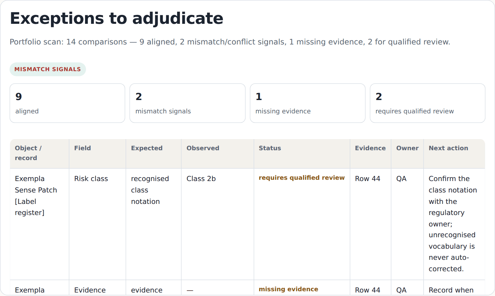

Keep EUDAMED, UDI, certificates, SS(C)P and controlled records aligned when products change.
Find EUDAMED, UDI, certificate, SS(C)P and controlled-document discrepancies after product changes — without replacing your existing systems. Bring the exports and controlled records you already have; ClinicOps compares the evidence deterministically and returns a reviewer-ready exception queue with owners and closure evidence. Machines compare; your qualified team interprets and decides.
Everything free runs in your browser — no sign-up, nothing you enter leaves the page.
The problem
One approved fact — a device name, a UDI-DI, an intended-purpose statement, a certificate reference, an SS(C)P revision — can appear in EUDAMED, UDI records, labels, IFUs, declarations, technical documentation, RIM/master data and controlled spreadsheets at once. Those copies are maintained by different owners in different systems, and after every change some of them quietly drift apart. Finding the drift by hand is slow; missing it is worse.
How ClinicOps works
Deterministic comparison, a bounded status vocabulary (aligned, mismatch signal, missing evidence, conflicting evidence, unresolved, requires qualified review), a named owner per exception, and a closure record at the end. No scores, no automated regulatory conclusions.
Behind ClinicOps: MSc in Medicine (Aalborg University) · hands-on pharmacovigilance · Pharma + MedTech documentation experience · 500+ regulated assignments, 100% on time · native Danish · the experience behind ClinicOps →
One flagship workflow
Regulatory Change Integrity Review
One approved change, one bounded evidence population, one reviewer-ready closure packet: source register, change-surface matrix, exception queue, owner routing and closure evidence. Every other entry point leads here.
Regulatory Integrity Scanner
The same workflow as a browser-local tool: run a single-change check or import a device/UDI export for a portfolio scan. Deterministic, exportable, nothing uploaded.
Portfolio scans & monitoring
No single change on the table? Start the review from a portfolio export. Changes keep coming? Monitoring extends a completed review — activated only where real use demonstrates recurrence.
What the output looks like

Coverage
See how each surface is handled in the use cases.
Boundaries
Specialist context when needed. Where a bounded exception requires clinical context, ClinicOps can introduce independent specialist review — across medicine and nursing — as part of the evidence trail. How specialist review works →
Inspect the method before you engage
Regulatory Integrity Scanner
Run a single-change check or a portfolio scan in your browser. Deterministic, exportable, nothing uploaded.
Interactive specimen register
Inspect a synthetic row-by-row evidence chain and the reviewer boundary.
Research & methodology
Public-source research on EUDAMED data quality, SS(C)P records and reconciliation method.
Bring one real change.
The fastest way to evaluate ClinicOps is a bounded pilot: one product family or one approved change, a declared evidence population, a fixed window and a named owner — delivered as a reviewer-ready closure packet.